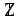

Inhalt Index DeskTop Bronstein

 Algebra und Diskrete Mathematik Mengenlehre Mächtigkeit von Mengen
Algebra und Diskrete Mathematik Mengenlehre Mächtigkeit von Mengen


Eine Menge heißt abzählbar (unendlich), wenn sie zu  gleichmächtig ist. Das bedeutet, ihre Elemente lassen sich durchnumerieren bzw. als unendliche Folge schreiben.
gleichmächtig ist. Das bedeutet, ihre Elemente lassen sich durchnumerieren bzw. als unendliche Folge schreiben.
Eine Menge heißt überabzählbar (unendlich), wenn sie unendlich, aber nicht gleichmächtig zu  ist. Demzufolge ist jede nichtabzählbare (unendliche) Menge überabzählbar (unendlich).
ist. Demzufolge ist jede nichtabzählbare (unendliche) Menge überabzählbar (unendlich).
| Beispiel A |
|
Die Menge  der ganzen Zahlen und die Menge |